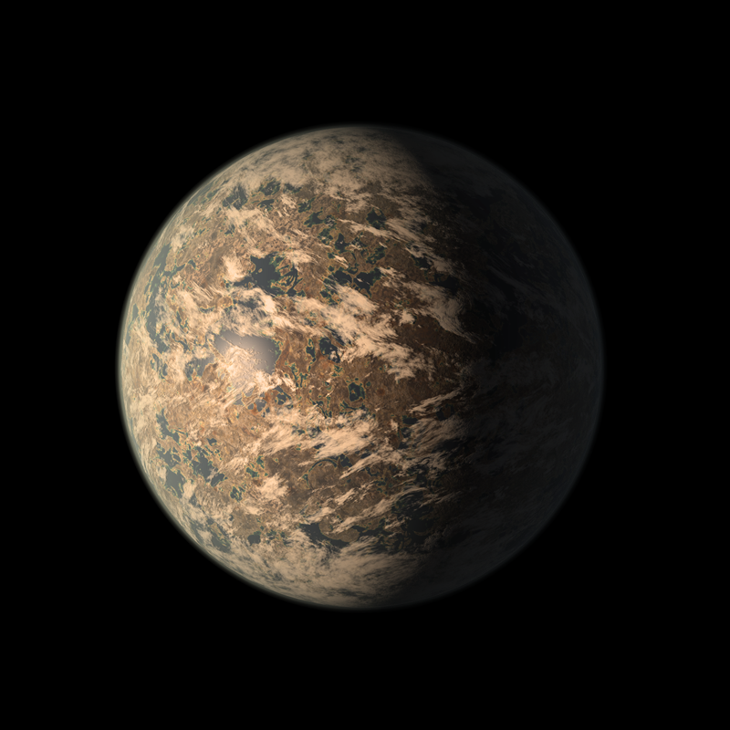
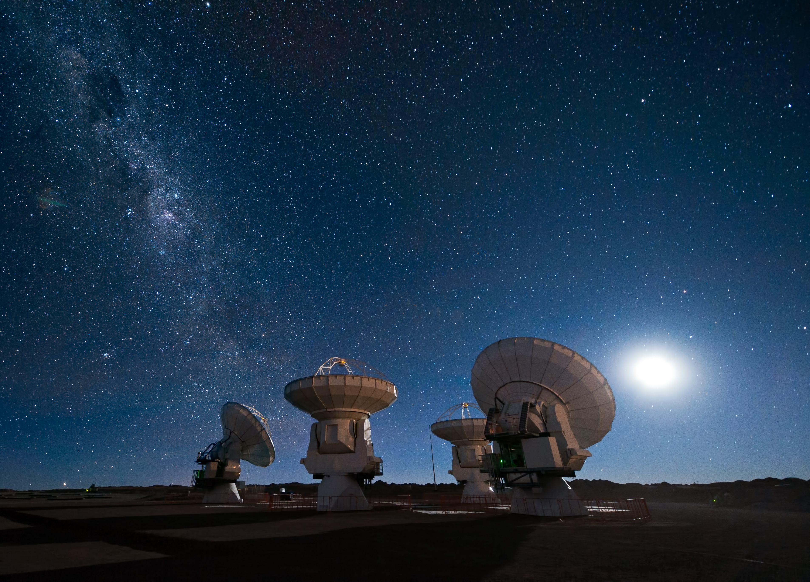

TRAPPIST-1e: Signals from another Earth?
A mysterious repeating radio signal from the TRAPPIST-1 system has astronomers questioning whether humanity is truly alone.
📡 SIGNAL ANALYSIS

Clearest image of TRAPPIST-1e taken by NASA
Aliens have always been a hot topic. Many people have tried to attest their existence, by fabricating images of UFOs. But there are some pictures that can’t be proven fake, and famous UFO conspiracy theories about Area 51 – an air base in the USA – have been getting increasingly notorious. Let me provide some context.
UFOs, also known as Unidentified Flying Objects, are mysterious flying saucers with a portrayed egg-shaped glass cockpit where aliens can control the spacecraft. Some sightings included the 1957 Levelland Lights incident, where multiple drivers have reportedly seen a glowing object in the sky which stalled engines and caused headlights to shut off, and they were only restored when those oblong objects flew away.
But why is Area 51 the mentioned place when it comes to UFOs? Well.. let me introduce you to it first.
Area 51 is a base in Lincoln Country, Nevada where UFOs have been allegedly kept private from the public. Conspiracy theorists believe that the remains and fragments of UFO crashes are stored inside the base. But this doesn’t really explain the previous question does it? Area 51’s intense association with extraterrestrial objects is due to many different things. Back in the mid 1950s, commercial airliners flew at 10000 to 20000 feet, while military aircraft hovered around the 40000 mark. However, the U-2 Spy Plane flew at altitudes of above 60000 feet. When sunlight hit its reflective wings at dusk, commercial pilots and air traffic controllers below saw strange, glowing objects moving at speed which were previously thought to be impossible, and this triggered a massive wave of UFO reports. Other than that, Area 51’s planes had extremely unique and bizarre designs, and basically anyone who saw these prototypes claimed that it genuinely looked like something extraterrestrial.
BACK TO THE TOPIC
THE DISCOVERY
So.. About 5 years ago, Earth has been incessantly and constantly receiving signals from TRAPPIST-1e – an ostensibly barren and rocky planet located in the habitable zone in the TRAPPIST system – every 11.6 minutes. With a $40 Billion telescope, they have also observed changes in light and the atmosphere at TRAPPIST-1e, which sparked many different theories and discussions among space enthusiasts. The team at NASA used the newly built Artemis Deep-Space Radio Array(ADRA), which was constructed extremely meticulously and customized for detecting super weak signals coming from distant astronomical objects. And with this monster, it can also translate those signals into precise readings for astronomers to probe with.
The signal was first detected at a network of radio telescopes located in Goldstone, California by the ADRA. At approximately 02:17 UTC on August 14, researchers monitoring NASA's Goldstone Deep Space Communications Complex in the Mojave Desert recorded an unusually narrow radio signal originating from the direction of the TRAPPIST-1 system. Other Deep Space Networks(DSN) along with the one in Goldstone confirmed that the ‘perpetrator’ was TRAPPIST-1e, which is singularly also the most habitable planet within that system…
TRAPPIST-1e – which will now be referred to as 1e – orbits in the habitable zone of its star: TRAPPIST 1. It is an ultra-cool red dwarf star located about 40.7 light-years away in the constellation Aquarius. All planets there are rocky like Earth, but only TRAPPIST-1e, f and g orbit within or near the system's habitable zone, where conditions could potentially allow liquid water. There is just one caveat though. The planet is tidally locked… Which means that one side of the planet faces the star while the other one stays in eternal darkness. Although this information is still unclear, as recent discoveries show otherwise, they are yet to be confirmed. This seven-planet system is so close to its star that the orbits could fit inside the orbit of Mercury – which is about 400 degrees celsius during the day.
Compared to our Sun, TRAPPIST 1 only has about 11.9% of the Sun’s radius, which makes it slightly larger compared to Jupiter, our own solar system’s gas giant. It’s about 9% of the Sun’s mass; and due to this, it is extremely dim, shining at about 0.05% of the Sun’s light. One thing special about this is that the trappist system is actually older than the solar system, and it is estimated to be around 7.6 BILLION years old.
THE FIRST SIGNAL

The first detection of the signal was actually from 15 years ago, but the signal was so faint and it only appeared once that the scientists overlooked it. Radio telescopes constantly detect strange signals from space, and most of them have perfectly ordinary explanations, and this is also not the first time that we have been receiving signals more than once from the same source. Stars produce radio emissions from the cooling of their core; pulsars and quasars spin rapidly emitting huge amounts of radiation from their poles; and sometimes, even human technology can accidentally produce alien signals that interfere with astronomical observations. So none of them were particularly concerned.
A STRANGE SIGNAL
However, one characteristic of this signal was quite unusual.
It was extremely narrow.
Narrow as in instead of being spread out at wide frequencies, this signal was concentrated at about 1.42039Hz. Even more strangely, this signal appeared for about 30 seconds before vanishing, seemingly disappearing forever.
Until, 11 minutes later. When scientists observed the same exact signal. Another eleven minutes passed. And again. And again.
According to records which were later published by NASA, the signal repeated itself for more than 10 hours. Each occurrence was so consistent that scientists began to wonder; What if their civilization was far beyond our current development? What if those weren’t even signals? But a messenger that was trying to tell us that we were not the only ones out there.
SCIENTISTS INVESTIGATE
At first, researcher Roger Brown and many others suspected that their machinery was malfunctioning.
“We assumed it was an instrumental problem,” stated Roger. “When you see something so accurate, especially from outer space, your first instinct isn’t excitement. It is suspicion. For me, when I first heard about the news, I was questioning the veracity of the claim. Until it got confirmed.”
Of course, all the scientists and researchers started investigating. Checking for problems with their equipment. Anything that was tampered with. And even with their tenacious beliefs that it was definitely a fault, the evidence proved otherwise. Nothing was wrong with their signal capturing devices.
THE FIRST TEST
So came the final test. The team pointed the telescope away from the old system, and they waited. The signal never came. This was the first major clue.
If the signal came from an interference nearby, pointing the telescope away should have kept it steady, but it was attenuated. Scientists repeated their observations multiple times. The results remained clear and tallied. That means that the signal was in fact coming from the TRAPPIST system.
RULING OUT THE OBVIOUS
After this, the team started checking and comparing the observation from known astronomical phenomena. Radio emissions from stars can sometimes be extremely powerful, particularly during stellar flares, where an intense explosion releases massive amounts of energy and particles shooting through space. But an individual immediately pointed out the issue. It can’t be a stellar flare.
Stellar flares produce a much broader burst of radio energy and since it is sudden and spasmodic, the signal would not have been repeated at such a precise interval. Instead, the signal detected by ADRA appeared to consist of extremely narrow bursts occurring at regular intervals.
A NEW SUSPECT
The researchers now had the planets as the suspects. And quickly, TRAPPIST-1e became the most voted candidate for further investigation, since it is one of the most habitable planets that we have found. They could not immediately prove that the signal was coming from the planet itself. From 42 light years away, separating a radio signal from a planet and from its surrounding star can be infuriatingly cumbersome.
THE INFRARED CLUE
Nonetheless, the timing of the observations created an intriguing possibility.
Every time the signal was transmitted, astronomers detected a brief increase in infrared radiation from the same small region of TRAPPIST-1e. At first, this was quickly brushed off as an adventitious coincidence. Then, they noticed something even stranger.
📊 INFRARED OBSERVATION DATA
Observation data. The distance stays constant at about 42 light-years; the changing value is the measured infrared intensity.
| Distance from Earth | Radio Pulse | Infrared Radiation |
|---|---|---|
| 41.75 light-years | Detected | 1.00× baseline |
| 41.74 light-years | Detected | 1.04× baseline |
| 41.72 light-years | Detected | 1.08× baseline |
| 41.73 light-years | Detected | 1.13× baseline |
| 42.70 light-years | Detected | 1.17× baseline |
Relative infrared radiation during repeated pulses
Stronger radio pulses were followed by larger infrared anomalies in the fictional observations.
THE BIG QUESTION
But wait, if the inhabitants on 1e knew how to transmit infrared light… they must be around the same level of civilization as us, or possibly even more advanced, and that leaves me wondering? How can a planet 42 light years away even know that we exist? I mean, they have been sending the signal for more than 10 years, so they must at least have some sort of clue of our existence.
THE PATTERN
The infrared signals we received weren’t random. Each time a pulse was detected, the infrared radiation rose for approximately 2 seconds before returning back to normal. And after countless comparisons, they came to a conclusion: the stronger the radio pulse, the higher the amount of infrared radiation.
THE POSSIBILITY
This created an unsettling possibility. If the infrared radiation was actually connected to the radio transmissions, it could mean that the source of the signal was not a natural astronomical phenomenon, but an energy-consuming object located somewhere on the planet's surface. This was the first evidence of another lifeform. They might not have even originated from TRAPPIST-1e. But we know something is there.
THE LIMITS OF THE EVIDENCE
However, if we were to pinpoint the exact location on the surface where the infrared light was being transmitted from, it would be basically impossible. Even with our telescopes, 1e would merely appear as a dot, and any visualization that you see online is just a theoretical version of the planet. The signal itself didn’t enunciate any clear message. There was no voice, no language and no unmistakable pattern spelling out a message.
WHAT WE KNOW
So basically, the pulse and the infrared signal proved to be futile for now.
But we do know now that we are not the only ones in the lone space.
Want more space discoveries?
Subscribe for the latest breaking stories, mysterious signals and discoveries from beyond our solar system.